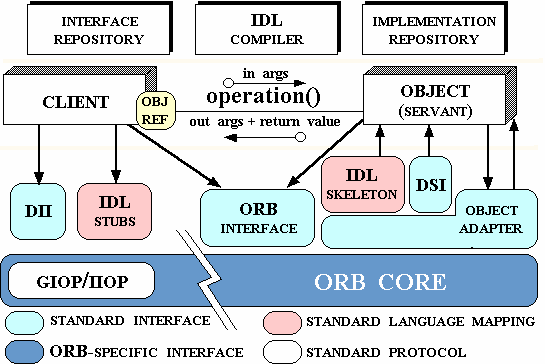

Canal de comunicación a través del cual los objetos solicitan servicios con independencia de su ubicación fésica
Permite la invocación estática y dinámica
Permite una comunicación transparente cuando un cliente envía una solicitud a un objeto remoto
Arquitectura
Visión General
Arquitectura

Detalle de la Arquitectura (cliente)
IDL Stubs: Funciones generadas desde la interfaz IDL para “enlazarlas” a los clientes Provee una interfaz de invocación estática
Dynamic Invocation Interface (DII): Permite especificar y construir requerimientos en tiempo de ejecución. Operaciones: create_request, invoke, send, get_response
Detalle de la Arquitectura (Servidor)
IDL Skeleton: Funciones generadas desde la interfaz IDL para “enlazarlas” a las implementaciones de objetos
Dynamic Skeleton Interface (DSI): Análogo al DII del lado de la implementación de objetos.
Puede recibir invocaciones estáticas o dinámicas desde los clientes
Detalle de la Arquitectura
ORB Interface:Provee funciones para acceder directamente al ORB core desde los clientes y desde las implementaciones de objetos
Su interfaz no depende de la interfaz de los clientes ni de las interfaces de las implementaciones de objetos
Object Adapter: Provee funciones para instanciar objetos, pasar requerimientos y manipular referencias de objetos
Provee inter-operabilidad
Detalle de la Arquitectura
Repositorio de Interfaces (Interface Repository): Provee persistencia de objetos
Su información permite que un programa encuentre un objeto cuya interfaz no conoce en tiempo de compilación
Repositorio de Implementaciones (Implementation Repository): Contiene información que permite al ORB core localizar y activar implementaciones de objetos